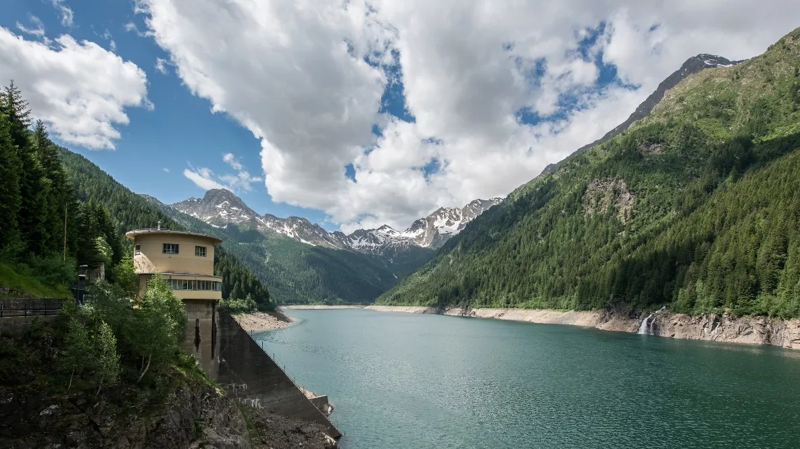
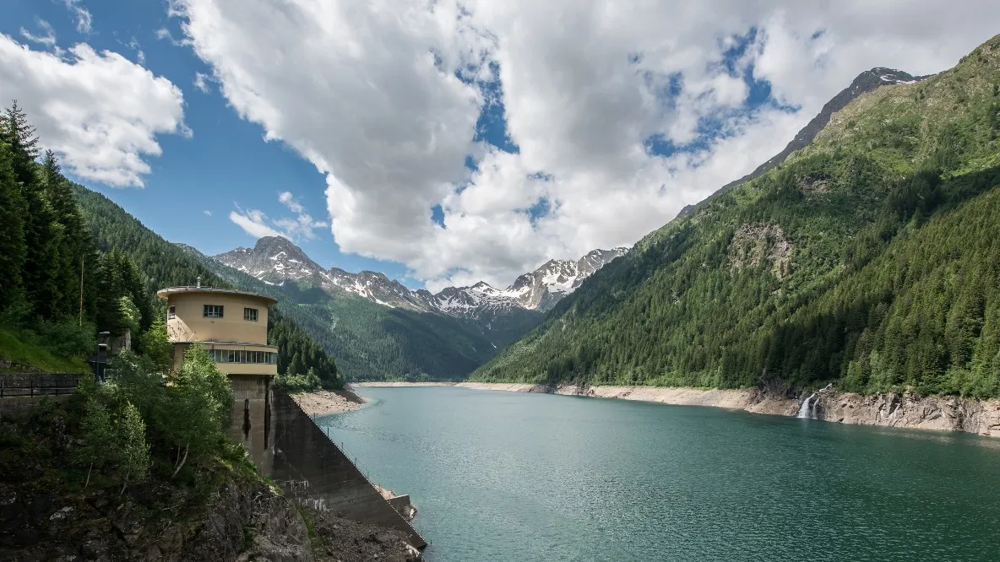
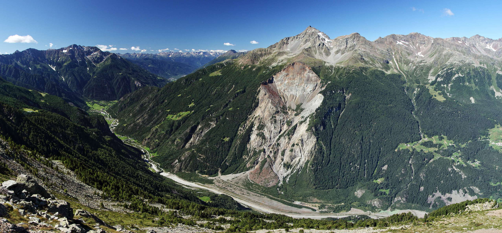

About the project
The main aim of the project is to measure the Landslide Susceptibility levels of a part of the Lombardy region territory, in North Italy. Landslide Susceptibility measures how much a given area is potentially subject to landslides events and it's displayed with a qualitative range of values, from "Low" to "Very High".
In order to elaborate this composite dataset, a series of basic layers will be processed, such as the digital terrain model of the area, the land use, the presence of roads and rivers, and many others. The idea is to indentify those areas more prone to a landslide phenomenon starting from the hazard levels brought by the many elements present in the territory.
The presentation of the work done is structured as follows.
- A first Methodology section will present the workflow and the different steps that were managed in order to obtain the final result.
- A second section will present the main Results, as well as discussing and analyzing them.
- Finally, all the layers used and processed will be set into a WebGIS, in order to visualize them in an interactive map.

About the area
The analysis is conducted within the boundaries of the Val Belviso area, a glacial valley of Middle Valtellina, between the municipalities of Teglio and Aprica, in the province of Sondrio, Lombardy. It is best known for the presence of the Frera Dam, which, behind it, generated the Belviso artificial lake.
The territory is not new to this kind of disastrous events. Many landslides indeed have occured along the years, among which perhaps the most famous is that one in the Val Pola, in 1987, still visible today.
 

